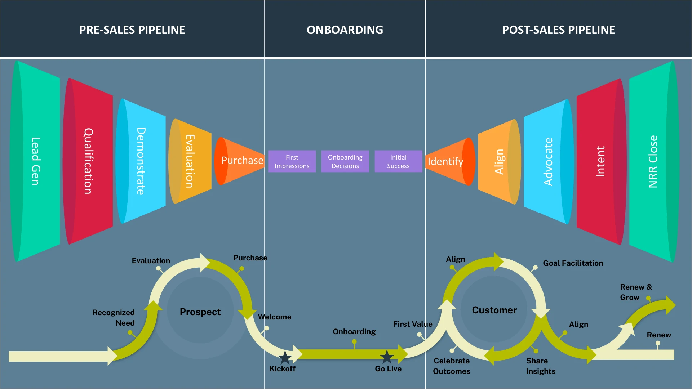

If Identify is about seeing opportunity, Align is about what happens next—when that opportunity fails to turn into progress. Because that is where most customer relationships begin to break down. Not at the point of purchase. Not even during onboarding. But in the stretch that follows, when the initial momentum fades and the responsibility for success shifts fully to the customer. This is the part of the journey that is hardest to see and easiest to underestimate. From the outside, everything appears stable. The customer is live. They have achieved their first meaningful outcome. The implementation is complete. There are no obvious issues. But underneath that surface, something begins to change. The structure that carried them to First Value disappears.
During onboarding, progress is guided. There is a plan. There are milestones. There is a clear sense of what comes next. Every interaction is anchored to movement, and that movement creates confidence. After First Value, that structure is gone. What replaces it is far less defined. The customer is expected to take what they have learned and apply it within the complexity of their own business. Competing priorities begin to pull at their attention. Internal constraints—time, resources, alignment—start to shape what is actually possible. What once felt straightforward begins to slow. And when progress slows, something more important begins to fade with it. Clarity.
TruthThe most dangerous part of the customer journey is not onboarding. It is what happens after First Value, when momentum fades and structure disappears.
This is the moment where most teams step back. They assume the customer is now capable of driving forward independently. They shift into a reactive posture—available when needed, but no longer actively shaping the path. On the surface, this feels reasonable. The product is working. The customer has seen value. The relationship is stable. But this is where alignment begins to drift. Because without continued effort, the connection between what the customer is doing and what they are trying to achieve starts to weaken. The work continues, but the meaning behind it becomes less visible.
This is the core problem Align is solving. Not a lack of opportunity, but a loss of direction. Because when direction is unclear, everything else becomes harder. Progress becomes inconsistent. Outcomes become difficult to measure. Value becomes harder to communicate. And when the time comes to revisit the relationship—whether for renewal or expansion—the conversation feels disconnected from the work that has been done. Not because the value is not there. But because it has not been continuously tied to something that matters.
Alignment, at its core, is the discipline of maintaining that connection. It is not something you establish once and return to later. It is something that must be reinforced as the customer’s reality evolves. Because their reality will evolve. Priorities will shift. New stakeholders will emerge. What once felt urgent may become secondary. What once seemed sufficient may no longer be enough. If your understanding of their goals remains static while their business changes, alignment breaks—even if nothing else does.
The only way to prevent that break is to stay engaged in how progress is actually happening. Not at a surface level, but at the level where execution meets constraint. Because this is where the signals live. A stalled initiative is not just a delay. It is a sign that something is missing. A partially realized outcome is not just incomplete. It reveals where additional support may be required. A team that struggles to maintain momentum is not disengaged. It is navigating competing demands that have not been fully addressed. These are not problems to be worked around. They are the clearest indicators of where alignment needs to be strengthened.
TruthAlignment is not a meeting. It is the discipline of keeping progress connected to what the customer is actually trying to achieve.
What changes at this point in the relationship is not the goal, but the way the goal must be pursued. Large objectives that once felt achievable begin to feel distant. Without structure, they lose momentum. Without momentum, they lose priority. The role of alignment is to restore that momentum. Not by redefining what success looks like, but by making progress visible again. By breaking the path forward into smaller, more immediate steps, the customer regains a sense of movement. What once felt abstract becomes tangible. What once felt overwhelming becomes manageable. And most importantly, progress becomes something they can see.
That visibility is what keeps alignment intact. Because progress, when it is visible, reinforces belief. It reminds the customer why they started. It validates the decisions they have made. And it creates the confidence needed to continue moving forward. But visibility alone is not enough. It must be shared.
Inside any organization, the people directly involved in execution are rarely the only ones who influence outcomes. There are stakeholders who are not in the room. Leaders who are not part of the day-to-day. Teams that are affected indirectly, but whose support is critical. If progress is not reaching them, alignment is incomplete. This is where most relationships stall—not because the work is not happening, but because the impact of that work is not understood beyond a small group.
When progress is consistently communicated in a way that connects activity to outcome, something shifts. What was once isolated becomes visible across the organization. What was once assumed becomes understood. And what was once questioned becomes supported. The conversation begins to change. Instead of asking whether the solution is valuable, the organization begins to explore how that value can be extended.
TruthIf the conversation only reports activity, alignment is already slipping. The job is not to review the relationship. The job is to realign it.
At that point, the nature of engagement evolves. Conversations move beyond updates and into reflection. Not just what has happened, but what it means. Not just what has been completed, but what should come next. These moments require intention. They require space to step back from execution and reconnect with purpose. And this is where the traditional structure of periodic business reviews falls short. Because in most cases, those conversations are designed to report, not to realign. They look backward instead of forward. They focus on activity instead of meaning. And too often, they center the company rather than the customer.
True alignment requires a different kind of conversation. One that returns to the original reason the customer made the decision to begin with, and tests whether that reason still holds. One that surfaces how their priorities have shifted, where progress has been made, and where it has stalled. And one that connects all of it to what should happen next.
When that level of alignment is in place, something important changes. The relationship no longer revolves around the product. It revolves around outcomes. Every recommendation is grounded in something the customer has already experienced, already validated, or is actively working toward. There is no gap between what is being suggested and what is needed. At that point, the conversation moves forward naturally. Not because it has been pushed. But because it makes sense.
And that is the signal that alignment is working. Not agreement. Momentum. A shared understanding of where things are going, and a clear path to get there. Because once that exists, the relationship no longer depends solely on you to carry it forward. It begins to move through the customer.